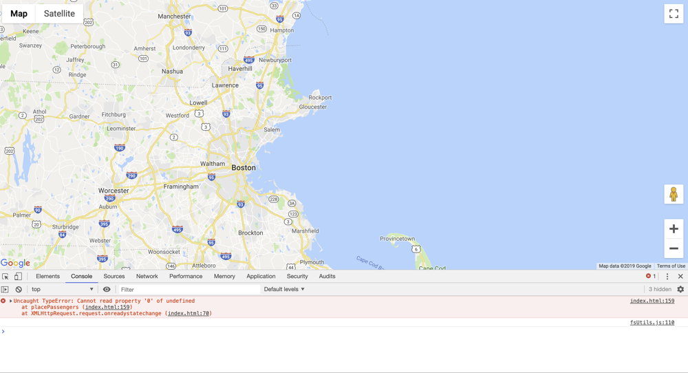
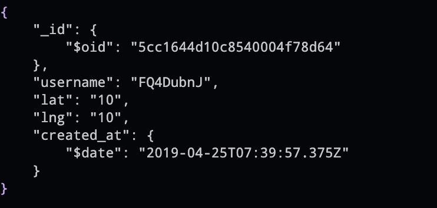
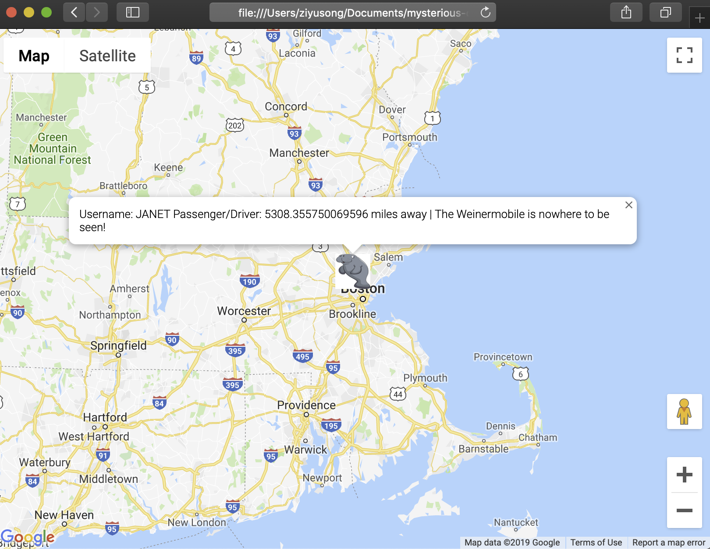
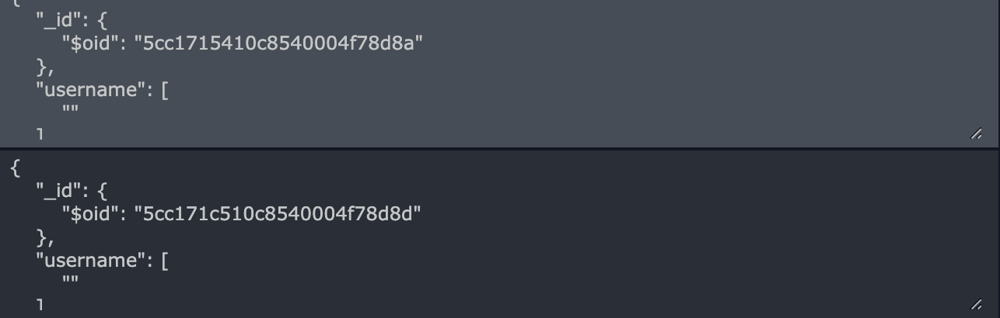
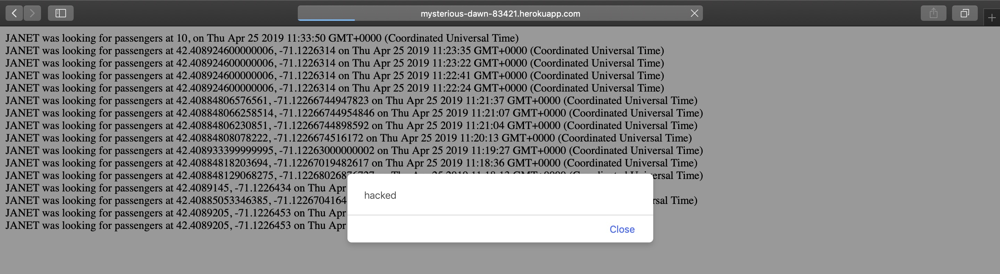
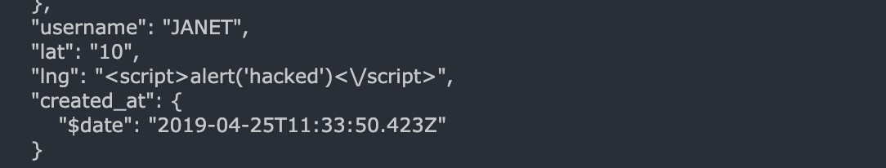

The product being tested contains both client-side web pages and server-side node.js web server application. The purpose of the work summarized here is to access the security and privacy vulnerabilities of the product. The accessment is done by intentionally sending undesired data to the server using either browser or external tools.
Different requests were sent to the server, which process and stores the data and send it back to the client. Some of those query strings contains wrong types or mallicious scripts that either intend to crash the server or the client, or steal information that should not be accessed by any third party. Curl and Burp Suite were the external tools I used to aseess the vulnerabilities.
The server does not have effective type checking of client-sent key-value pairs before inserting them into database.
Use case: curl --data "username=FQ4DubnJ&lat=10&lng=10" mysterious-dawn-83421.herokuapp.com/rides
 This is the only document in passengers collection. And the first screenshot was the result when the username was JANET, a driver username. The website failed to process the correct JSON sent back by the server. After inspecting the code of the client-side web page, I found that even when placing passengers onto the map, the javascript was still trying to access "rideRequests.vehicles[i]", which is undefined because there was only rideRequests.passengers[i].
Use case: curl --data "username[$gt]=&lat[$gt]=&lng[$gt]=" http://mysterious-dawn-83421.herokuapp.com/rides
Use case: curl --data "username[$gt]=&lat=10&lng=-10" http://mysterious-dawn-83421.herokuapp.com/rides
Use case: curl --data "username=wef&lat[$gt]=&lng=1-0" http://mysterious-dawn-83421.herokuapp.com/rides
 Since the product is using Google Map Mark API, having empty lat/lng didn't not crash the Javascript (my guess is that Google API has really good error handling with incorrect instantiation of objects), but then the problem is a passenger could actually prevent their marker from being displayed by making either one of the username, lat and lng empty. However, they still get away with all the drivers' geolocation. Different from having an username of "", this actually wipes off the marker of the passenger from the google map. As the first screenshot of this section shows, there is no passenger marker on the map even though there are documents in the database.
Use case: --data "username=JANET&lat=10&lng=<script>alert('hacked')</script>" http://mysterious-dawn-83421.herokuapp.com/rides
 As it shows, it's hacked.
The server code for requests to '\passenger.json', which query for users and could be database injection attempts, were block by this practice:

It prevents all kinds of database injection to this address because there is no argument passed into database find() function. The server dumps all documents from MongoDB and does the finding by doing javascript "==" comparison. Even not a typed language, so far I haven't been able to fooled any == operand so I think it's a very safe practice. However, from the scalablity point of view, I see this could be a bad programming practice given the size of a collection in a database could be huge. This implementation could easily make the host machine runs out of memory when turning the collection into an array.
The application has errors in client-side javascipt code, which means it doesn't have all the functionality promised.
The application has no protection against cross-site scripting at the root address.
The application is good at preventing simply database injections to /passengers.json because the server does use monggodb command db.collection.find() but passes in no parameters. It turns all the entries in the database into an array and uses javascript == operand to actually find the matching usernames. I tried mnay ways to bypass the == operand but wasn't able to do it.
Tried to use Burp Suite but I did not find it particularly useful to the vulnerabilities I discovered. https://support.portswigger.net/customer/en/portal/articles/1783066-configuring-firefox-to-work-with-burp